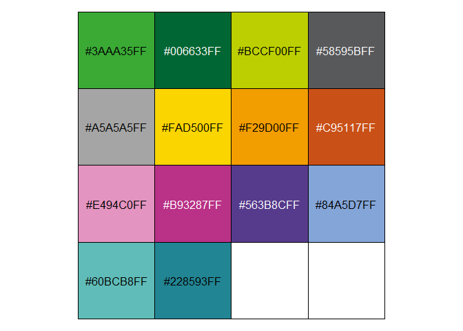
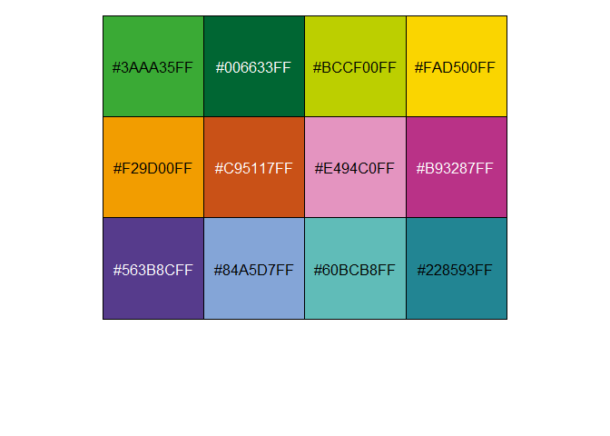
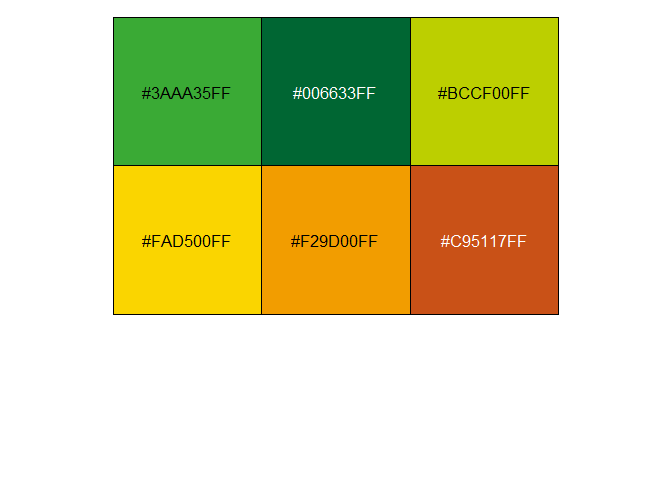
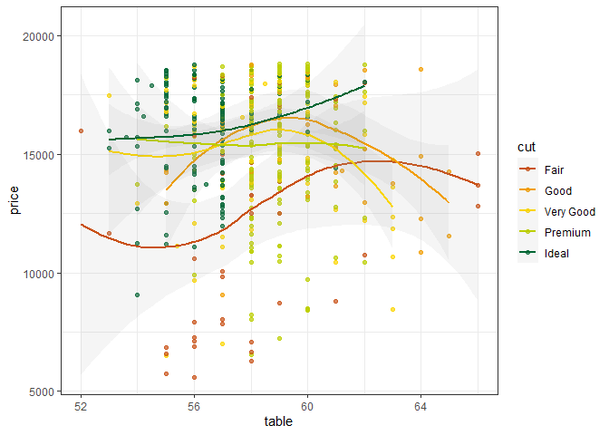
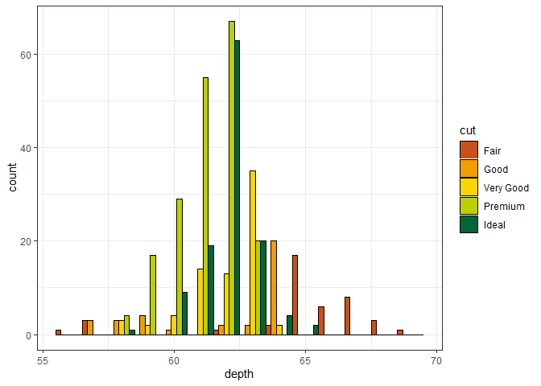
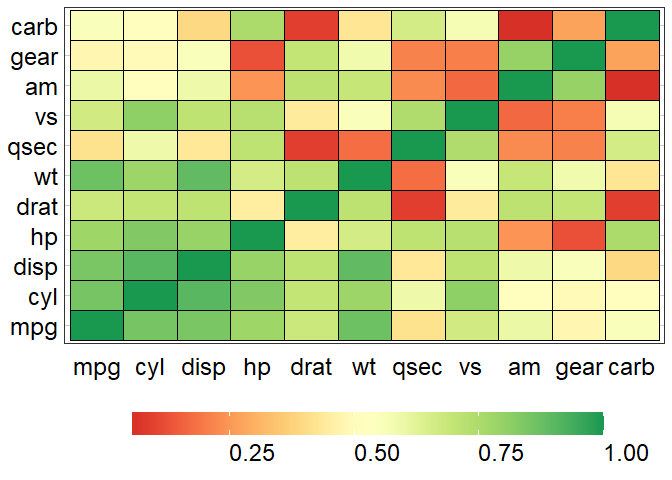
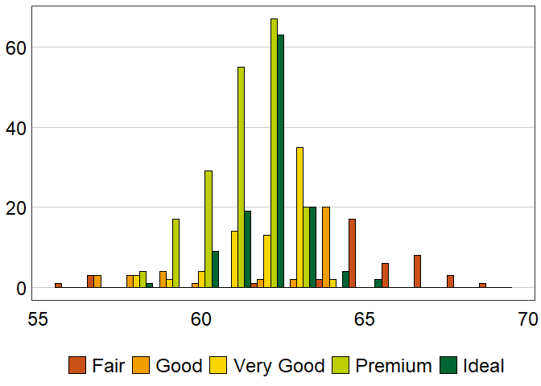
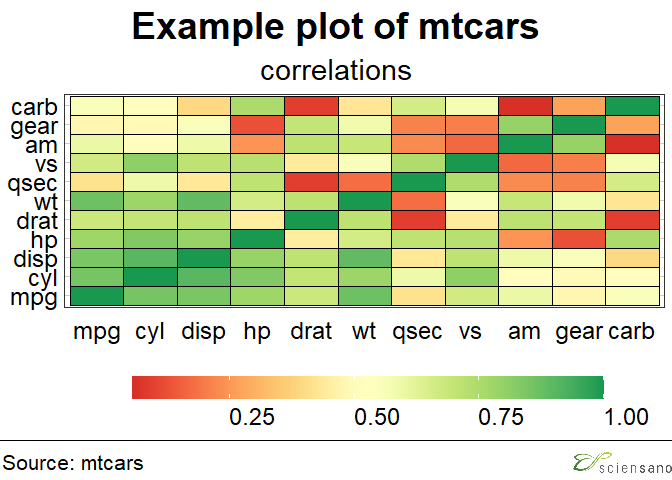

The goal of ggsano is to standardize and implement the Sciensano housestyle within R. The ggsano package currently provides three categories of important functions: sciensano_style, sciensano_colours and sciensano_templates. The sciensano_style functions can handle a ggplot2-object and recompile it according to the Sciensano house style. The sciensano_colours functions return the Sciensano house style colours in HEX format (‘#XXXXXX’). Both discrete and continuous scales are available.
Installation
You can install the development version of ggsano from GitHub with:
# install.packages("devtools")
devtools::install_github("sciensanogit/ggsano")The package can be loaded by:
library(ggsano)
#> Scanning ttf files in C:\WINDOWS\Fonts ...
#> Extracting .afm files from .ttf files...
#> C:\Windows\Fonts\arial.ttf : ArialMT already registered in fonts database. Skipping.
#> C:\Windows\Fonts\arialbd.ttf : Arial-BoldMT already registered in fonts database. Skipping.
#> C:\Windows\Fonts\arialbi.ttf : Arial-BoldItalicMT already registered in fonts database. Skipping.
#> C:\Windows\Fonts\ariali.ttf : Arial-ItalicMT already registered in fonts database. Skipping.
#> Found FontName for 0 fonts.
#> Scanning afm files in C:/Users/RoDe1798/Documents/R-4.0.2/library/extrafontdb/metricsUsing the functions
Colors
The package has two palettes-functions available: pal_sciensano() for discrete colors, and pal_sciensano_c() for continuous colors.
For the color palette pal_sciensano, there are four options available: default, contrast, GnRd, and PuBl. The colors and HEX-codes are as follows:
DEFAULT
scales::show_col(pal_sciensano(palette = "default")(14), labels = TRUE)
CONTRAST
scales::show_col(pal_sciensano(palette = "contrast")(12), labels = TRUE)
GnRd
scales::show_col(pal_sciensano(palette = "GnRd")(6), labels = TRUE)
PuBl
scales::show_col(pal_sciensano(palette = "PuBl")(6), labels = TRUE)
Using the palette for a discrete scale:
library("ggplot2")
#> Warning: package 'ggplot2' was built under R version 4.0.5
library("reshape2")
library("cowplot")
#> Warning: package 'cowplot' was built under R version 4.0.5
data("mtcars")
data("diamonds")
ggplot(
subset(diamonds, carat >= 2.2),
aes(x = table, y = price, colour = cut)
) +
geom_point(alpha = 0.7) +
geom_smooth(method = "loess", alpha = 0.1, size = 1, span = 1) +
theme_bw() + scale_color_sciensano(palette = "GnRd", reverse = TRUE)
#> `geom_smooth()` using formula 'y ~ x'
ggplot(
subset(diamonds, carat > 2.2 & depth > 55 & depth < 70),
aes(x = depth, fill = cut)
) +
geom_histogram(colour = "black", binwidth = 1, position = "dodge") +
theme_bw() + scale_fill_sciensano(palette = "GnRd", reverse = TRUE)
Using the palette for a continuous scale:
cor <- abs(cor(mtcars))
cor_melt <- melt(cor)
p1 <- ggplot(
cor_melt,
aes(x = Var1, y = Var2, fill = value)
) +
geom_tile(colour = "black", size = 0.3) +
theme_bw() + scale_fill_sciensano_c(palette = "red-yellow-green")
p2 <- ggplot(
cor_melt,
aes(x = Var1, y = Var2, fill = value)
) +
geom_tile(colour = "black", size = 0.3) +
theme_bw() + scale_fill_sciensano_c(palette = "green")
p3 <- ggplot(
cor_melt,
aes(x = Var1, y = Var2, fill = value)
) +
geom_tile(colour = "black", size = 0.3) +
theme_bw() + scale_fill_sciensano_c(palette = "red")
cowplot::plot_grid(p1, p2, p3)
sciensano style
sciensano_style(): has no arguments and is added to the ggplot chain after you have created a plot. It will change the text-size, font, and lay-out of the graph into a dedicated Sciensano theme.
p1 +
sciensano_style() + ## Default font is Arial.
theme(legend.key.width = ggplot2::unit(2.5, "cm")) ## extend the legend
ggplot(
subset(diamonds, carat > 2.2 & depth > 55 & depth < 70),
aes(x = depth, fill = cut)) +
geom_histogram(colour = "black", binwidth = 1, position = "dodge") +
theme_bw() + scale_fill_sciensano(palette = "GnRd", reverse = TRUE) +
sciensano_style()
Finalizing plots
finalise_plot: will save out your plot with the correct guidelines for publication for a Sciensano graphic. It is made up of functions that will left align your title, subtitle and source, add the Sciensano blocks at the bottom right and save it to your specified location. The function has six arguments, three of which need to be explicitly set and three that are defaults unless you overwrite them.
Here are the function arguments: finalise_plot(plot_name, source_name, save_filepath, width_pixels, height_pixels, logo_image_path)
-
plot_name: the variable name that you have called your plot. -
source_name: the source text that you want to appear at the bottom left corner of your plot. You will need to type the word"Source:"before it, just the source, so for examplesource = "Source: ONS"would be the right way to do that. -
save_filepath: the precise filepath that you want your graphic to save to, including the.pngextension at the end. This does depend on your working directory and if you are in a specific R project. An example of a relative filepath would be:/charts/line_chart.png. -
width_pixels: this is set to 640px by default, so only call this argument and specify the width you want your chart to be. -
height_pixels: this is set to 450px by default, so only call this argument and specify the height you want your chart to be. -
logo_image_path: this argument specifies the path for the image/logo in the bottom right corner of the plot. The default is for a placeholder PNG file with a background that matches the background colour of the plot, so do not specify the argument if you want it to appear without a logo. If you want to add your own logo, just specify the path to your PNG file. The package has been prepared with a wide and thin image in mind.
final_plot <- finalise_plot(
plot_name = p1 +
sciensano_style() +
ggtitle("Example plot of mtcars", subtitle = "correlations") +
theme(legend.key.width = ggplot2::unit(2.5, "cm")),
source = "Source: mtcars",
logo_image_path = "inst/extdata/logo.png",
width_pixels = 640,
height_pixels = 550
)
final_plot